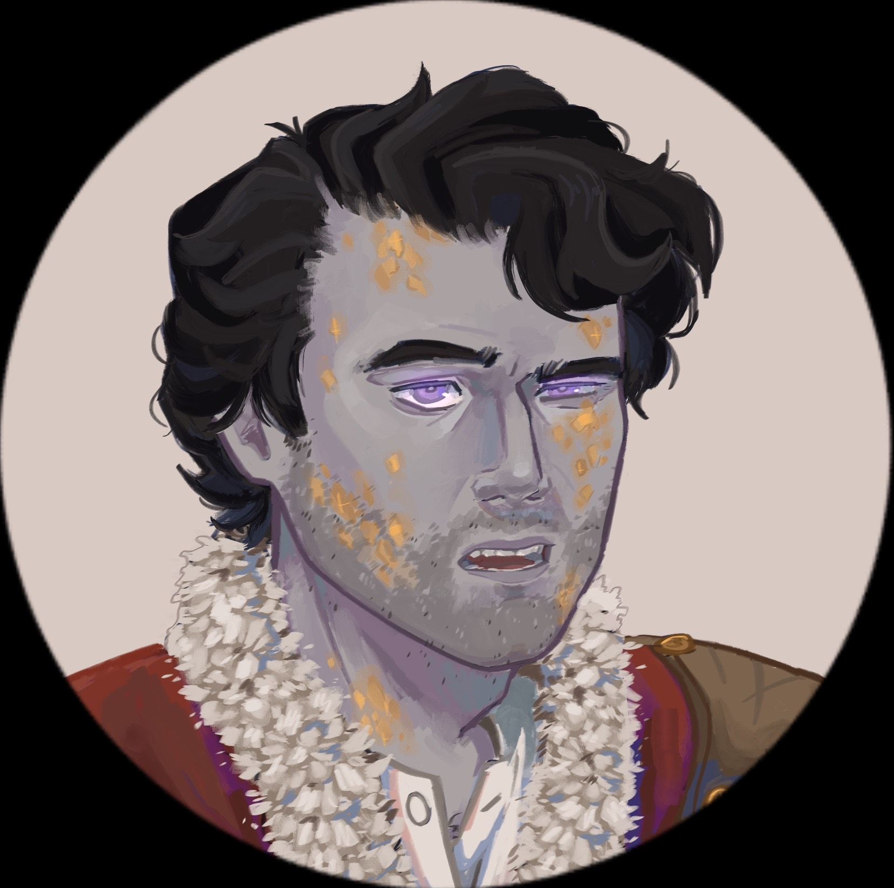
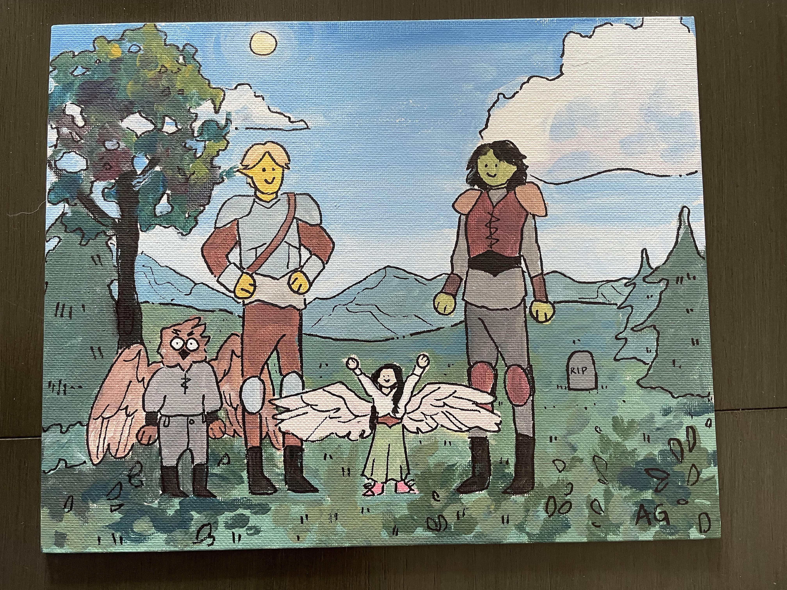
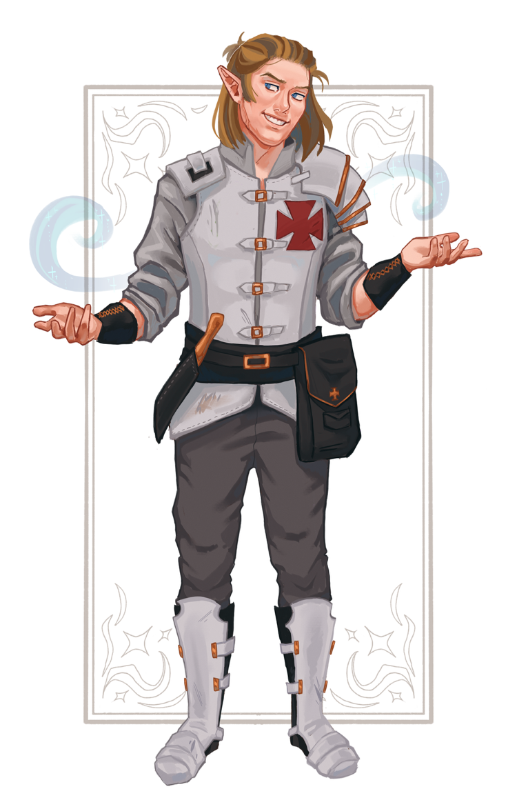

My D&D Journey
Back in the summer of 2021, I was first introduced to Dungeons & Dragons by my uncle. While my family was on vacation together, my uncle DMed a campaign for all of us, where I played D&D for the first time. While I enjoyed it, my interest to continue tapered off after the third session.
Fast forward one year, my friends and I were making plans for the summer and decided to try out D&D. Since I still was not the most confident when it came to D&D, I chose to play the same character I played in my family's campaign for this one-shot. From there, we started playing an online campaign once we all went of to college. During that campaign, I had my first character death and started to learn a lot more about D&D.
In the beginning of 2023, we were coming close to wrapping up our campaign, and in conversation our DM mentioned a show called The Legend of Vox Machina and how it was a good show based on a D&D campaign. I decided to watch the show, I got hooked, and went on to watch the campaign that it was based off, being Critical Role Campaign 1. From that moment onward, I was far more attached to D&D than I had been before then.
That summer, we started our first in-person campaign. We also ran a few one-shots throughout the year whenever we were able to meet in-person. By the end of 2024, new players had tried out DMing and we were all pretty experienced with the game. I am also all caught up on Critical Role's campaigns and still enjoy their weekly shows.
My Characters
Campaign Characters
Baugwial Tikam - Aasimar Sorcerer
Baugwial Tikam was my first ever D&D character. When I first played him in the campaign with my family, his name was Dulmar, but I changed his name when I went to play with my friends. In our virtual campaign, he was a Draconic Bloodline Sorcerer who specialized in fire spells. Our campaign's setting was in Acquisitions Incorporated, and while we were level 2 we went to clear out a dungeon. In that dungeon, our party foolishly split up, leading to Baugwial and another character to die fighting some wraiths. That was the end of him for almost 2 years, but I will be bringing him back as an undead character in our level 20 one-shot this Christmas.

Harmus Sternbeard - Dwarf Fighter
Following the death of Baugwial, Harmus Sternbeard was the character I played for the duration of our Acquisitions Incorporated campaign. He was a Samurai Fighter who specialized in two-weapon fighting. When myself and my friend whose character had also died were creating our new characters, we decided to introduce our new characters to the group in an abnormal way. My character, a dwarf, stood on the shoulders of my friend's character, a goliath, and wore a trenchcoat. It was a silly little gimmick that did not last long, but served its purpose.
Elijah Brown - Eladrin Cleric/Fighter
Elijah Brown was the character I played for our first in-person campaign, Wild Beyond the Witchlight, in the summer of 2023. He was a Forge Domain Cleric who later multiclassed into Fighter.

Johannes Volkmar - Elf Wizard/Fighter
Johannes Volkmar is the character I played in our homebrewed campaign in the summer of 2024. He is a Bladesinging Wizard who later multiclassed into Fighter. The campaign was about a group who all got pulled from different points throughout real-world history. Johannes and his cousin Dimarus were part of the Second Crusade, and were pulled from the 12th-century Holy Roman Empire. After discovering the machine that had caused our temporal hiccups, we were left with an ending that left open the possibility for a second campaign with these characters.

One-Shot Characters
Sylvalur Ravensong - Eladrin Warlock
Sylvalur Ravensong was only the third character I had ever made, and this was for a level 11 one-shot. He was a Fiend Warlock, who to my beginner's mistake, did not have Eldritch Blast. Our task in this one-shot was to enter a dungeon and retrieve 3 powerful artifacts that had been left there by an old wizard. We managed to get 2 of them, and on our way towards the exit we got jumped. My character was knocked out and taken to be brain-washed while everyone else escaped.
Bardak Leafborough - Halfling Rogue/Ranger/Fighter
Bardak Leafborough was the character I played in our one-shot we played while on a camping trip. He was probably the funniest character I created. Our task was to compete against each other in a camping competition. For each task in the competition, I did something silly that ultimately did not help Bardak, but was very funny. The final task was to clean up our camps and make it look like we had never been there. My camp at the point was just 6-foot deep hole, and I "cleaned up" by placing a pitfall trap over it. The session then ended in a fight with the Beholder who organized the event.
Valamin Swiftrest - Elf Monk
Valamin Swiftrest was the character I played in our Christmas one-shot in 2023. He was a Way of Mercy Monk. At the end of the one-shot, we fought a mind flayer by the name of Santac'laus.
Gus Gus Dunks - Gungan Berserker
Gus Gus was the character I played in our Star Wars 5e one-shot at the end of the summer of 2024. He was a berserker whose rage was fueled by taking hard drugs. Our task as imperial mercenaries was to retrieve the best sandwich in the galaxy to deliver to a sith lord. We decided we wanted the sandwich, and we all died trying to fight him.